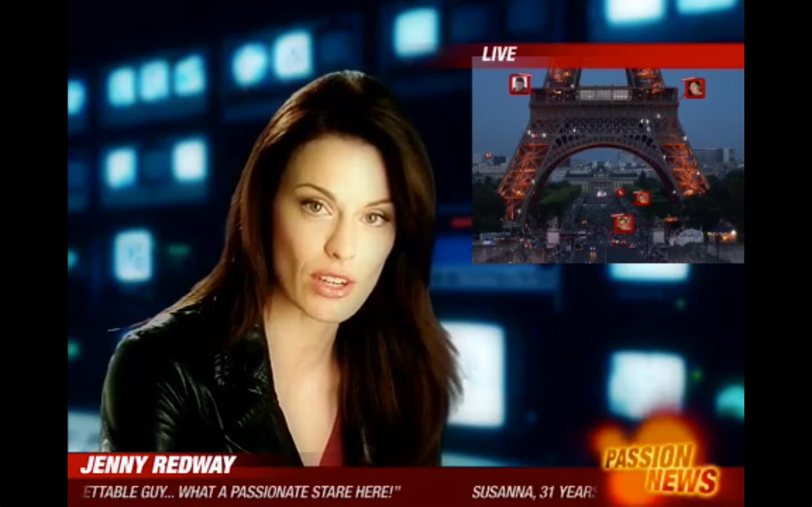
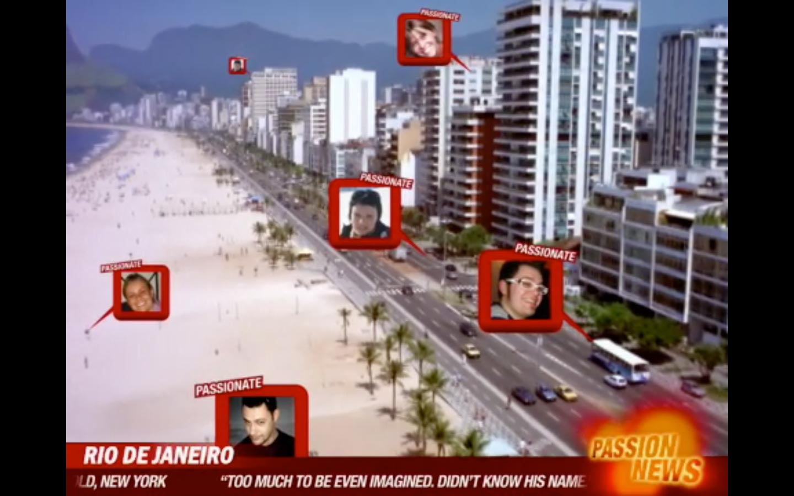

CAMPARI PASSION NEWS
Promo video per social network Campari Passion News.
Brief
Create hype and interest on a community specifically designed to gather Campari enthusiasts.
Solution
Design, Shooting and Development of a bunch of short videos airing on the fake news channel “Passion News live”, reporting on the craze about the social network www.mapyourpassion.com.
Skills and Services
- Chroma Key Technology
- Video Shooting
- Video Editing
- Photography
- Make up and Hairstyling
- Audio editing
Actress - Jenny Keul
Director - Andrea Livio
DoP - Selene De Rui & Valerio Ferrario
Client - Campari
Agency - McCann-Erickson
Type - Video, Greenscreen

